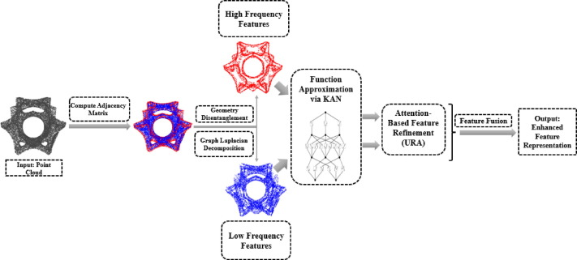
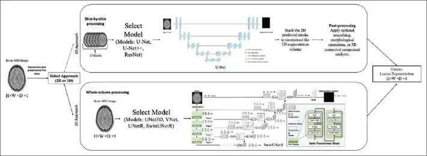
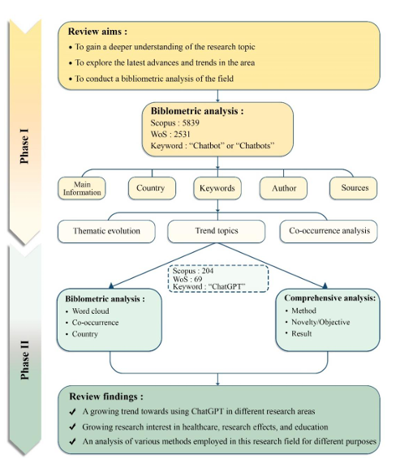
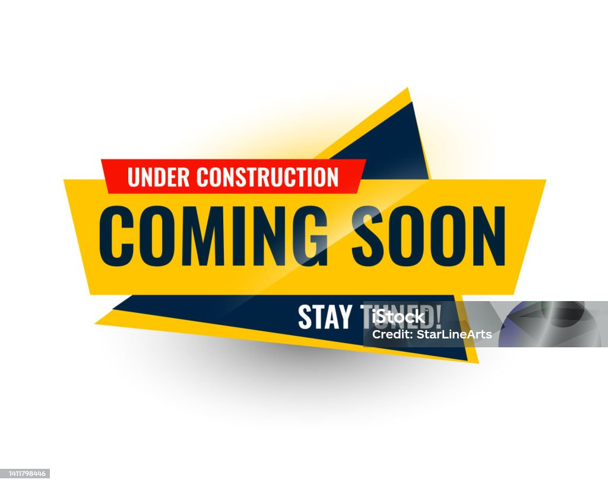
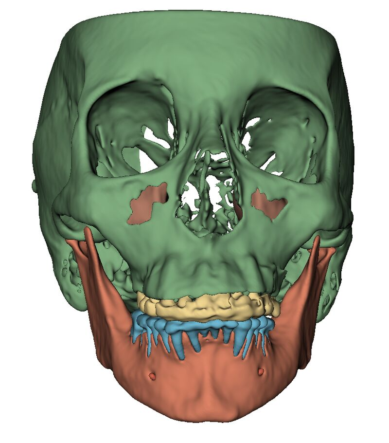
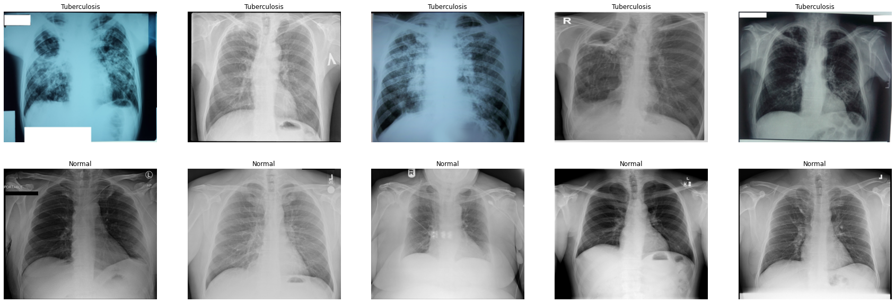

Professional Summary
Medical Image Processing & AI Researcher specializing in 3D/2D segmentation, landmark detection, classification, and image registration. I independently translate methods from scientific papers into end-to-end clinical AI pipelines, including 3D Slicer extensions that cut annotation time from 4–5 hours to about 2 minutes. Backed by a strong software engineering foundation, my work also spans PEFT, KAN-based 3D modeling, and QKD research software.
Technical Skills
Work Experience
Computer Vision Engineer @ Applied Artificial Intelligence Lab (AAILAB)
Jan 2023 – Present- Delivered 4 proprietary 3D Slicer extensions for Farin Roshan Teb, reducing clinical annotation time from 4–5 hours to about 2 minutes with 92% accuracy on multiclass CT/CBCT.
- Built 3D skull/jaw segmentation, anatomical landmark detection, and 2D kidney segmentation pipelines using MONAI, nnU-Net, and PyTorch.
- Optimized deep learning models for low-latency deployment on consumer-grade clinical hardware.
Researcher @ RCDAT
Apr 2024 – Present- Designed and built control software, communication protocols, and Django/Vue.js management interfaces for a Quantum Key Distribution (QKD) system.
- Developed AI research prototypes and hardware-interfacing software pipelines.
AI Intern @ Roshan (Remote)
Jul 2022 – Sep 2022- Engineered a CNN pipeline for Tuberculosis classification, effectively handling highly imbalanced datasets.
Project Analyst & International Department Lead @ Iracode
Jul 2020 – Jan 2021- Established the international department and architected a unified software roadmap for the Red Crescent Society.
Full-Stack Developer @ IT Core, K. N. Toosi University
Nov 2018 – May 2020- Built a Django-based Thesis Management System to streamline university academic workflows.
Education
MSc in Computer Engineering (Artificial Intelligence)
2022 – 2026Iran University of Science and Technology (IUST)
Thesis: 3D Interactive Segmentation of Skull and Jaw Images Using Deep Learning (SATRAP). Supervisor: Dr. Mohsen Soryani.
BSc in Computer Engineering
2017 – 2021K. N. Toosi University of Technology
Project: Real-Time Traffic Light Detection in Self-Driving Cars Using Deep Learning. Supervisor: Dr. Ali Ahmadi.
Publications

KANGURA: Kolmogorov-Arnold Network-Based Geometry-Aware Learning with Unified Representation Attention for 3D Modeling of Complex Structures
M. R. Shafie*, M. Hajiabadi*, et al. Manufacturing Letters, Vol. 49, pp. 1376–1385 (2026). (* Equal Contribution)
View Publication
Diagnosing Multiple Sclerosis from Magnetic Resonance Imaging Images: Highlights from the Second Isfahan Artificial Intelligence Event 2024
F. Davanian, ..., M. Hajiabadi, et al. Journal of Medical Signals & Sensors, Vol. 16, p. 3 (2026).
View Publication
Chatbots and ChatGPT: A Bibliometric Analysis and Systematic Review of Publications in Web of Science and Scopus Databases
H. Khosravi, M. R. Shafie, M. Hajiabadi, et al. International Journal of Data Mining, Modelling and Management (Inderscience), Vol. 16, Issue 2, pp. 113–147 (2024).
View PublicationKey Projects

Automatic 3D Skull & Jaw Segmentation
Developed deep learning models and a clinical 3D Slicer extension for automated 3D segmentation of skull and jaw CT/CBCT scans (Farin Roshan Teb).

Interactive 3D Skull & Jaw Segmentation
Engineered interactive 3D deep learning models and a 3D Slicer extension enabling fast user-guided skull and jaw segmentation (Farin Roshan Teb).
3D Anatomical Landmark Detection
Built a 3D Slicer extension for automated 3D anatomical landmark localization on craniomaxillofacial volumes (Farin Roshan Teb).
Smile Landmark Detection
Developed a 3D Slicer extension for 2D facial landmark detection across four standard views with automated clinical measurements and Persian Excel/PDF reporting.
Squash Analytics Prototype
Built a YOLOv8/OpenCV computer vision prototype with court perspective transformation to track squash players and compute on-court movement metrics.

Tuberculosis Classification
Built a robust CNN workflow for tuberculosis detection under strong class imbalance constraints during internship at Roshan.
Academic & Leadership
Head TA, Research Assistant & Peer Reviewer
Dec 2022 – Present- IUST (2022–2026): Served in multiple Head TA roles (Deep Learning, Fundamentals of Deep Learning) and as core TA for Multimodal LLMs (MLLMs), Digital Image Processing, Computer Vision, Neural Networks, and Pattern Recognition.
- University of Tehran (May–Jul 2024): Invited TA at the School of Mechanical Engineering, lecturing on CNNs (classification & segmentation) and mentoring final AI projects.
- K. N. Toosi University (2023–2024): Teaching Assistant for Fundamentals of Computer Vision across two semesters.
- Research Labs: Research contributor at Image Processing Lab (Dr. Mohsen Soryani) and AAILAB (Dr. Shariat Panahi).
- Peer Review: Manuscript reviewer for Machine Learning with Applications (Elsevier) and DARU Journal of Pharmaceutical Sciences (Springer).
Awards, Certificates, Volunteering & Interests
Awards: Finalist (Top 8), PG&E Energy Analytics Challenge 2025; 3rd Place, IAI Event 2024 (MS Segmentation); 3rd Place, Manufacturing AI Case Study (INFORMS QSR & Virginia Tech, 2024).
Certificates: 2nd MedAI Summit (Oct 2026); 1st MedAI Summit (18h); National Meeting on AI in Medical Imaging; DeepLearning.AI (TensorFlow, CNNs, Neural Networks & Deep Learning).
Volunteering: Squash Coach (Farhan Club, 2022–Present); Content Writer (Konkur Computer, 2022–2024).
Interests: Squash, Football, Agriculture, Historical Books, Traditional Iranian Music.